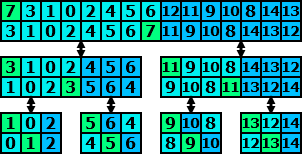

Podsumowanie
Zanim przejdziemy do omawiana złośoności algorytmu szybkiego sortowania,
najpierw spójrzmy na pseudokod tego algorytmu:
| Dane: |
Liczby naturalne idx1, idx2 oraz ciąg liczb
xidx1, xidx1+1,...,
xidx2-1
|
| Wynik: |
Uporządkowany ciąg x'idx1,
x'idx1+1,..., x'idx2-1,
który powstał z przestawienia elementów ciągu xi.
|
| Krok 1. |
Wywołaj funkcję „podziel” z parametrami idx1 oraz idx2,
a dwa znaczniki zwrócone przez funkcję przypisz
do zmiennych i1 oraz i2.
|
| Krok 2. |
Jeżeli idx1 < i1-1, to rekurencyjnie wywołaj
funkcję „uporzadkuj” dla parametrów idx1 oraz i1.
|
| Krok 3. |
Jeżeli i2 < idx2-1, to rekurencyjnie wywołaj
funkcję „uporzadkuj” dla parametrów i2 oraz idx2.
|
Pseudokod jest bardzo prosty i jedyne operacje wykonywane na tablicy są
przeprowadzane przez funkcję „podziel”. Z poprzedniej lekcji
pamiętamy, że funkcja podziel wykonywała n-1 porównań, gdzie liczba
n jest długością dzielonej tablicy. Dlatego skoro szaczujemy złożoność
z góry możemy powiedzieć, że funkcja „podziel” wykonuje tyle
porównań ile wynosi długość dzielonego fragmentu. Niestety określenie złożoności
algorytmu szybkiego sortowania nie jest takie proste, gdyż złożoność tego
algorytmu w dużym stopniu zależy od tego na jakie części będą dzielone
fragmenty tablicy, dostarczane funkcji „podziel”. Na początek rozważmy
przypadek optymistyczny, tzn. taki w którym funkcja „podziel”
będzie dzielić dostarczane fragmenty na dwie równe części. Spójrzmy na
poniższy rysunek:

Na rysunku zaprezentowane jest drzewo wywołań funkcji „uporzadkuj”.
W każdym węźle na górze jest pokazany fragment tablicy dostarczony do funkcji
„uporzadkuj” natomiast na dole jest pokazany stan tego fragmentu
po wywołaniu funkcji „podziel”.
W tym miejscu możemy dokonać podobnej analizy, jak w przypadku algorytmu
porządkowania przez scalanie. Zauważmy, że: na każdym poziomie tego drzewa
długości fragmentów tablicy nie przekraczają liczby n (liczba n
oznacza rozmiar całej tablicy). Wobec tego funkcje podziel, które są wywływane
w każdym poziomie wkonują co najwyżej n porównań. Oszacujmy jeszcze
liczbę poziomów. Zauważmy, że: w każdym występują fragmenty dwa razy mniejsze
niż w poziomie wyżej. Dodatkowo kończymy rozbjanie fragmentów, gdy na dole
osiągniemy podział na jednoelementowe fragmenty.
Wobec tego, jeśli przypomnimy sobie naszą definicję logarytmu, zauważymy,
że liczba poziomów jest zbliżona do logarytmu z liczby n.
Wobec tego liczbę porównań możemy oszacować przez
n · log2 n.
Niestety nie zawsze będziemy mieć tyle czszęścia, w dzieleniu fragmentów tablicy.
Rozważmy teraz tabliczę liczb uporządkowaną od elementu największego do najmniejszego.
Zauważmy, że funkcja „podziel” na takiej tablicy działa tak, iż
po wykonaniu tej funkcji w pierwszej części dzielonego fragmentu są prawie wszystkie'
elementy. Dodatkowo po wykonaniu funkcji „podziel” pierwsza część
jest odwrotnie uporządkowana, czyli ta sytuacja będzie się powtarzać.
Przeanalizujmy złożoność alogrytmu, na takim fragmencie. Na początku funkcja
„podziel” wykona się na n elementowym fragmencie, następnie
na n-1 elementowym, kolejno na n-2 elementowym i tak aż
fragment będzie składał się tylko z dwóch elmentów.
Wobec tego liczbę porównań możemy wyliczyć sumując:
(n-1) + (n-2) + ... + 3 + 2. Jeśli przypomnimy sobie lekcję o
sumie wyrazów ciągu arytmetycznego, to zauważymy, że ta suma wynosi:
((n-1)·n) / 2 - 1, czyli w przybliżeniu n2.
Aby uniknąć przypadku z poprzedniego akapitu, często w algorytmie szybkiego
porządkowania wykorzystuje się losowanie. Losuje się „wartość osiową”
W ten sposób, złożoność algorytmu nie zależy od danych, a od wylosowanych wartości.
Dodatkowo mamy duże prawdopodobieństwo, że wylosowany element, będzie bliski
medianie dzielonego fragmentu tablicy. Jeśli jednak, zdarzy się tak, że wylosowany
element będzie bliższy najmniejszemu lub największemu elementowi w dzielonym fragmencie.
To niestety fragment tablicy nie podzielimy tak jakbyś my chcieli (na dwie w miarę
równe części), niestety jedna z tych części będzie znacznie większa. Jednak w
następnym wywołaniu funkcji „uporzadkuj” znów będziemy losować
„wartość osiową” i znów będzemy mieli dużą szansę wylosowania
odpowiedniego elementu. W menu lekcji, dostępna jest opcja „rozwiązanie
zrandomizowane”, które wyświetla program wykorzstujący losowanie,
porównaj to rozwiązanie z rozwiązaniem wzorcowym a także
przeanalizuj ten program, wywołując go kilka razy na tej samej tablicy.
Ponadto możesz uruchomić program wzorcowy oraz zrandomizowany, na tablicy odwrotnie
uporządkowanej zobaczysz wówczas, iż program zrandomizowany działa o wiele szybciej.